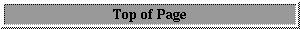

The previous sections dealt with compiling and running CAM as a single stand-alone executable. CAM can also be run as part of the CCSM coupled model system. In this case the you need other CCSM components and scripts in addition to the CAM source code. To get the CCSM download go to the web-page:
http://www.ccsm.ucar.edu/models/ccsm2.0/
The CCSM download includes the flux coupler, active ocean and sea-ice models as well as data ocean and sea-ice models. and it includes the CAM2 and CLM2 source code provided with the CAM distribution. The CCSM2.0 download page also gives full documentation on running the coupled system and using the scripts and Makefile. Here we give a short description on how to use the scripts.
The first thing to do is to uncompress and untar the source code and needed datasets.
unzip
untar xvf
unzip
untar xvf
The main CCSM script is in "ccsm2/scripts/test.a1" and is called "test.a1.run". The suggestion is that if you run several cases you create directories parallel to "test.a1" with the case-name, and main scripts with the case name ending in ".run". In this case the standard test script case-name is "test.a1". "test.a1.run" invokes the "*.setup.csh" scripts that create the model executables and setup input files and namelists for each model component. The setup scripts are as follows:
The "b" section of the "test.a1.run" script is where the user can set various important model configuration settings (resolution, run-type, case-name etcetera). Be sure to change "CSMDATA" to the location of where you untarred the input datasets. The "c" section then allows you to set the model components that will be used (data or active models) and to choose the number of threads and MPI tasks given to each component. After this the setup scripts are invoked in turn for the configuration of data or active model choosen in the main run script.
The "atm.setup.csh" script creates the CAM model namelist, including preparing input
datasets, creating the Filepath and misc.h, params.h CPP definition files, and building the
model executable. This script is configured to support a small number of model configurations
(T31 and T42 resolution using Eulerian dynamics). The user may be able to use other
resolutions by changing each of the setup.csh scripts. The user should also become familiar
with the namelist options and Filepath, params.h and misc.h configuration files described later in
this document.

Questions on these pages can be sent to... erik@ucar.edu .
 Search page
Search page